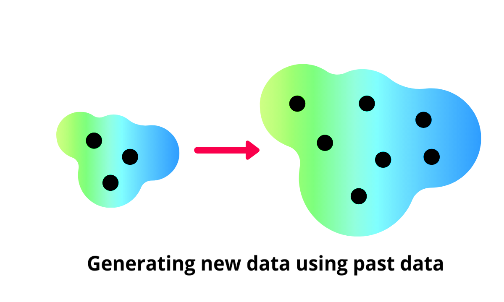
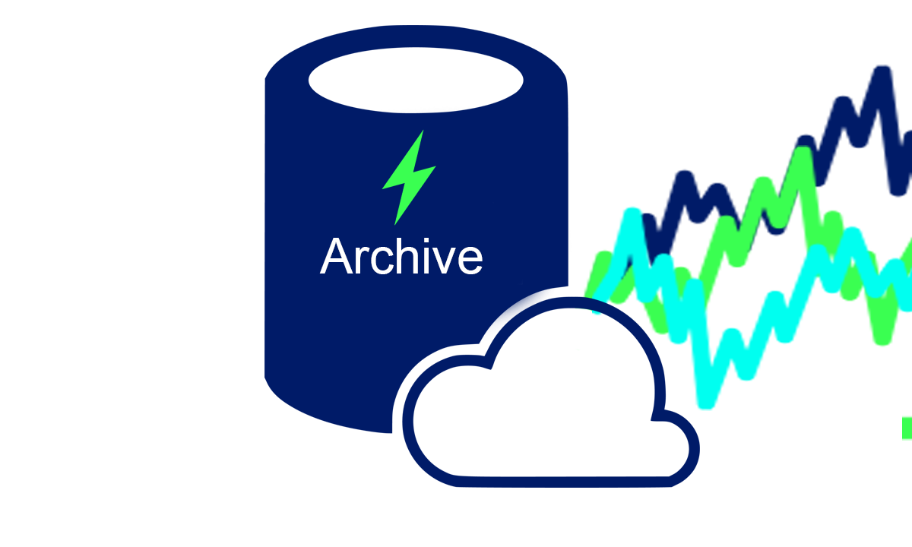

XGenTS: Exploratory analysis of Energy models#
XGen Time Series
An eXplainable framework for Generative Time Series
Designed to improve the performance of existing models using generated data. It generates novel datasets based on past or current real-world data, enabling the model to learn and improve from this valuable additional information. XGenTS also serves as an archive for a wide range of energy-related datasets.
It's based on PyTorch and can be installed using pip.


XGen Time Series Archive#
| Year | Dataset | Frequency | Duration | Type | Location | Measurements | Download | Source |
|---|---|---|---|---|---|---|---|---|
| 2020 | XGenTS-ESS(Ours) | 1Hz | 6 month | Residential | France | I,V, P,Q, S | Download | |
| 2020 | IDEAL | 1Hz | 18 month | Residential | UK | P, S | Download | |
| 2019 | Enertalk | 15 Hz | 3 day | Residential | South Korea | P,Q | Download | |
| 2018 | LIT | 15 kHz | 30 sec | Residential | Brazil | P, S | Download | |
| 2018 | AMPds | 0.1 mHz | 2 years | Residential | Canada | P, S,I | Download | |
| 2016 | COOLL | 100 kHz | 6 sec | Individual appliance | France | I,V | Download | |
| 2016 | WHITED | 44 kHz | 5 sec | Individual appliance | Multiples | I | Download | |
| 2015 | REFIT | 1 Hz | 4+ years | Residential | US | P | Download | |
| 2015 | Dataport | 1 Hz | 4+ years | Residential | US | P,S | Download | |
| 2015 | UK-DALE | 16 kHz | 2 years | Residential | UK | I,V, P,Q, S | Download | |
| 2015 | DRED | 1 Hz | 6 month | Residential | Netherlands | P | Download | |
| 2014 | PLAID | 30 kHz | 5 sec | Individual appliance | US | I,V | Download | |
| 2014 | ECO | 1227 kHz | 6 sec | Residential | Switzerland | I,V, P, pf | Download | |
| 2013 | iAWE | 1 Hz | 73 day | Residential | India | I, V, P, Q, S, pf | Download | |
| 2012 | Tracebase | 1 Hz | 1 day | Individual appliance | Germany | P | Download | |
| 2011 | REDD | 16.5 kHz | 19 day | Residential | US | I, V, P | Download | |
| 2011 | BLUED | 12 kHz | 1 week | Residential | US | I,V | Download | |
| 2017 | Electricity AP | 16mHz | 4 month | Residential | Belgium | P | Download |
Sponsors and Institutional Partners#
With gratitude to Institute Polytechnique de Paris, Oxford Institute of Mathematics, OneTech TotalEnergies for generously supporting the development and maintenance of XGen Time Series.
This work is licensed under a Creative Commons Attribution 4.0 International License.